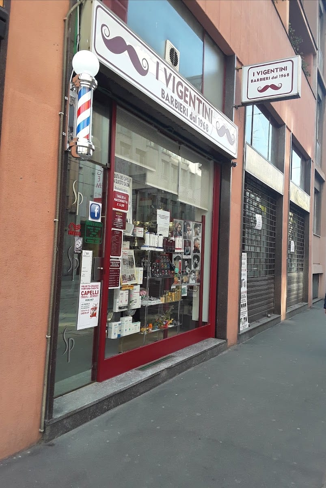

Dal 1968 · Porta Vigentina
Un mestiere del 1968, oggi in tre
Pino — Giuseppe Muollo — sta dietro questa poltrona dal 1968, e prima di lui suo nonno faceva il barbiere a Salerno. Oggi il mestiere continua in tre: la figlia Claudia, con Chantal e Alessia, sotto l'occhio attento di Pino.
«Non vogliamo essere semplici barbieri, ma barbieri col segno dell'altruismo.»
Lo fanno come una volta — un taglio pulito, una rasatura classica, una barba curata con pazienza — e con una cosa rara in più: le buone maniere. È, semplicemente, uno dei barbieri più amati di Milano.
Claudia
Chantal
Alessia
Pino